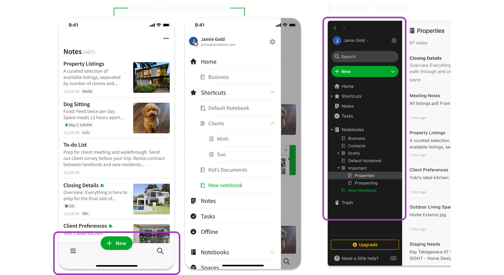
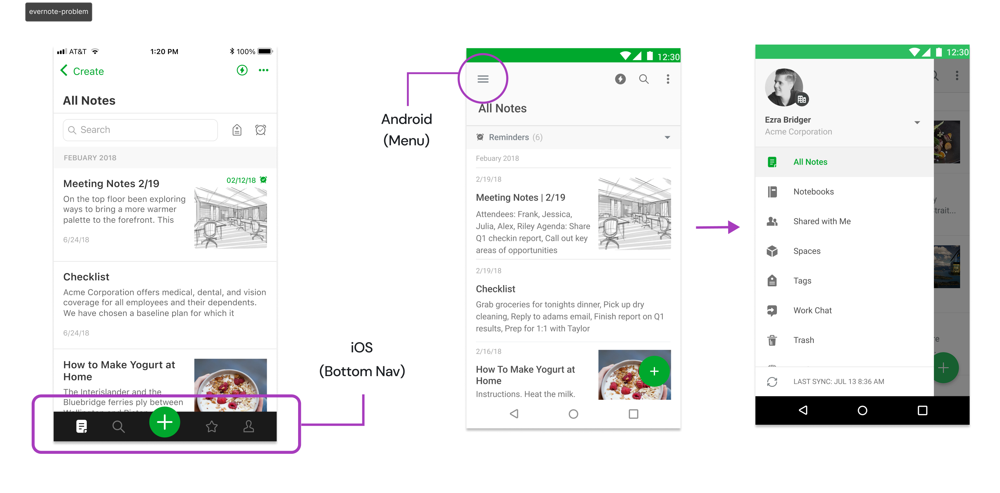
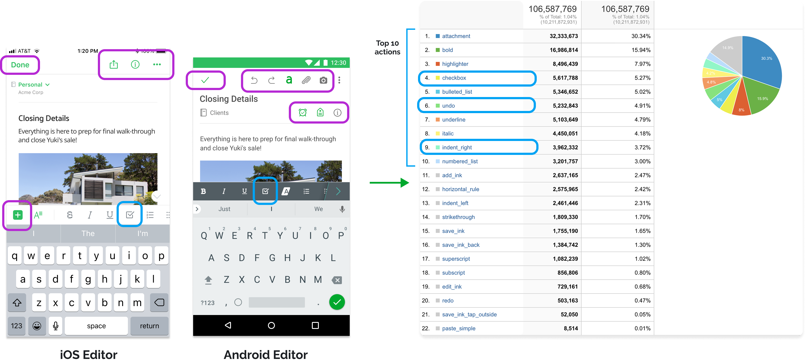
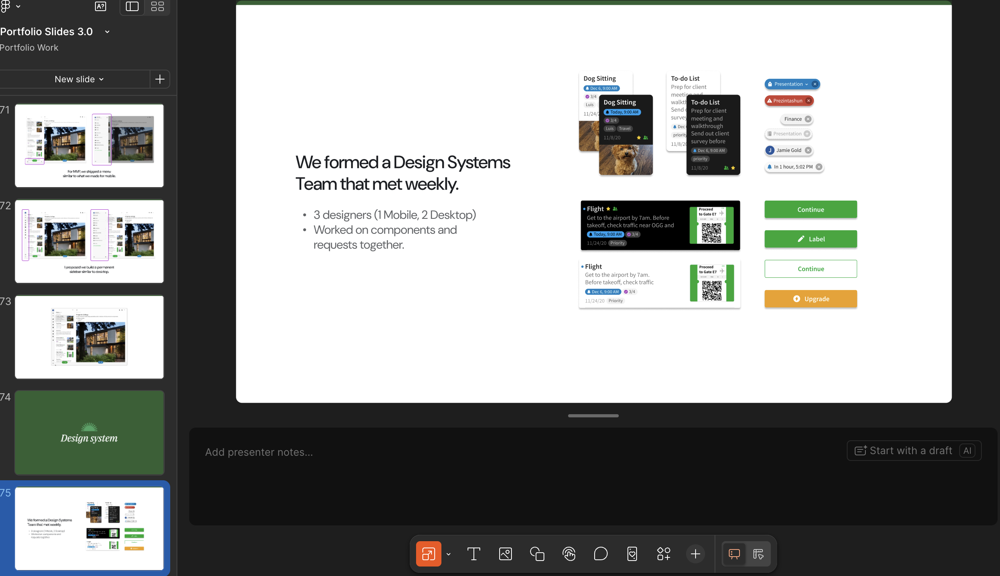
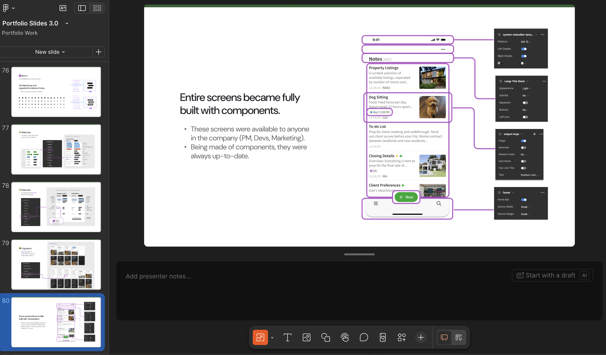
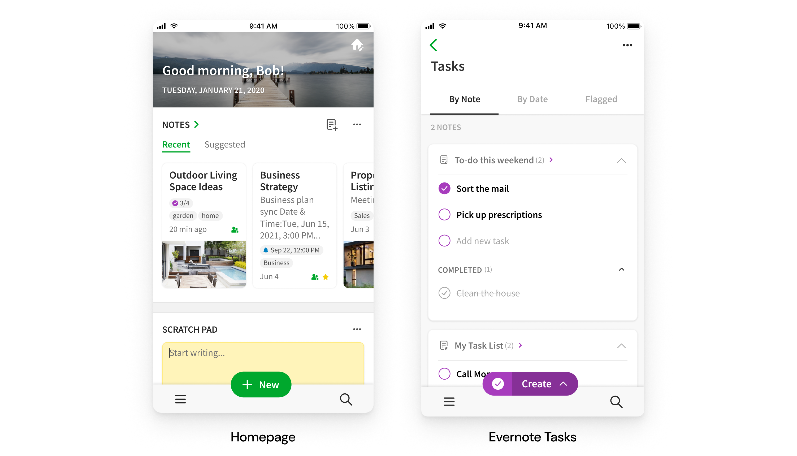

5 years as Senior Product Designer. Led the full iOS and Android redesign, built the mobile design system from scratch, and unified a product that two separate teams had been pulling apart for years.

Evernote's iOS and Android apps had been built by two separate teams, and it showed. The navigation was completely different — iOS used a bottom bar for one-touch access, Android used a hamburger menu. The editor toolbar varied by platform. The tablet experience was an afterthought. Users with multiple devices were experiencing what felt like two different products.
My mandate was to fix that. Design a new, consistent mobile experience across all platforms — without disrupting the habits of millions of existing users.

The problem — iOS and Android had completely different navigation, built by two separate teams
"The two apps were designed and built by two separate teams — and they were also not talking to desktop."
The first and most contentious decision was navigation architecture. iOS had a bottom tab bar — fast, thumb-friendly, one-touch access to everything. Android had a hamburger menu. We needed to pick one pattern and commit.
We tested both. Users were comfortable with either. But when we looked at the product roadmap, the answer became clear: a scalable sidebar menu made more sense for where Evernote was heading. We were adding features. The bottom bar would run out of room. So we gave up one-touch iOS access in favor of a menu that could grow — and that now matched the desktop sidebar exactly.
Giving up the iOS bottom nav was unpopular internally. It meant more taps to get anywhere. But it unlocked a consistent mental model across mobile and desktop, and gave us room to scale. We made the menu expandable on Android — something the platform had never had before.
The editor was the other major battleground. iOS and Android had different toolbars, different formatting options, different interaction patterns. We had 106 million editor actions in our analytics. We used them.
The data told us: attachment was #1, bold was #2, checkbox was #4. Undo was used on Android but wasn't available on iOS at all. We used this to prioritize what got built, what got promoted in the toolbar, and what got cut. Every decision was anchored to real usage, not intuition.

Editor prioritization — 106M actions analyzed to determine what to build, promote, and cut
We also added an "Edit Button" — a long-requested feature that protected notes from accidental edits. Forum posts praising it appeared within days of launch. We iterated based on beta feedback, adding a "Single tap to edit" toggle for users who wanted the old behavior back.
The tablet experience had always been the mobile bottom bar shoved onto the left side of a larger screen. Nobody had ever designed specifically for it. I proposed we build a permanent sidebar — matching the desktop — rather than adapting the mobile nav. For MVP we shipped a simplified version. Then I pushed for the full sidebar. It shipped.
Partway through the redesign it became clear we had a bigger problem: every screen was being built from scratch, every time. There was no shared vocabulary. A button looked one way in notes, another way in settings. I helped form a weekly Design Systems team — three designers, one mobile and two desktop — to fix this.

Design Systems team — 3 designers meeting weekly, building Atoms, Molecules, and Organisms
We built the system in three layers. Atoms were the smallest pieces — we cleaned up and organized hundreds of icons into an official library. Molecules were reusable components: buttons, inputs, pills, badges, toasts. Organisms were full UI patterns: the note preview card, the bottom nav, the top nav. Text styles were baked into components so designers never had to think about which font size to use.

Entire screens assembled from components — available to PMs, devs, and marketing, always up to date
Screens built from components were available to anyone in the company — PMs, engineers, marketing — and were always up to date because changing a component updated every screen that used it. Responsiveness was built into the components. The design system became the source of truth for the entire mobile product.
The redesign shipped across iOS, Android, and iPad. The design system became the foundation the team built on for years after. Two major features — the Evernote Homepage and Evernote Tasks — were designed and shipped faster than anything before them, because the components were already there.

Results — designers became faster and more consistent, shipping Homepage and Tasks using the new system